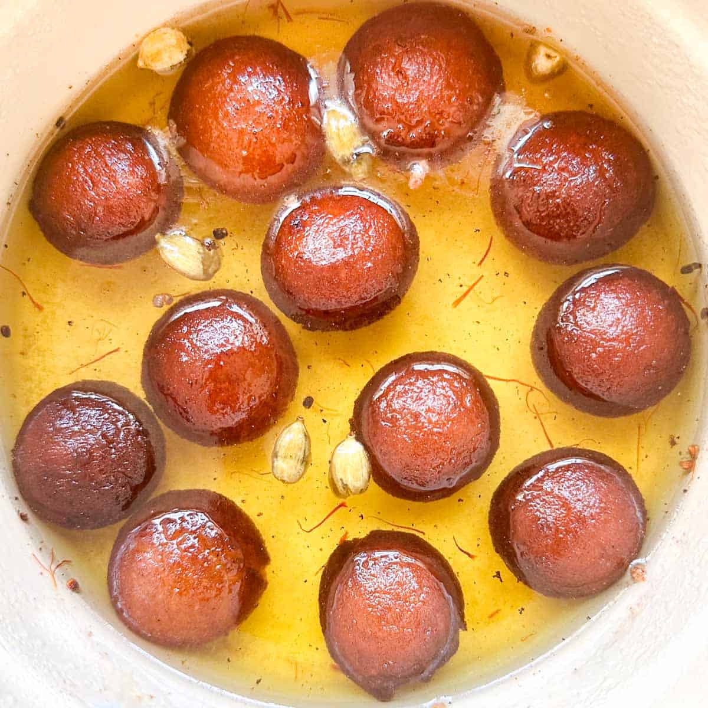

Gulab Jamun
Ingredients
- 1 cup dry milk powder
- 3 tablespoons all-purpose flour
- 2 tablespoons ghee (clarified butter), melted
- ½ teaspoon baking powder
- ½ cup warm milk
- 1 tablespoon chopped almonds (Optional)
- 1 tablespoon chopped pistachio nuts (Optional)
- 1 tablespoon golden raisins (Optional)
- 1 pinch ground cardamom
- 1 quart vegetable oil for deep frying
- 1 ¼ cups white sugar
- 7 fluid ounces water
- 1 teaspoon rose water
- 1 pinch ground cardamom
Recipe
- In a large bowl, stir together the milk powder, flour, baking powder, and cardamom. Stir in the almonds, pistachios and golden raisins. Mix in the melted ghee, then pour in the milk, and continue to mix until well blended. Cover and let rest for 20 minutes
- In a large skillet, stir together the sugar, water, rose water and a pinch of cardamom. Bring to a boil, and simmer for just a minute. Set aside.
- Fill a large heavy skillet halfway with oil. Heat over medium heat for at least 5 minutes. Knead the dough, and form into about 20 small balls. Reduce the heat of the oil to low, and fry the balls in one or two batches. After about 5 minutes, they will start to float, and expand to twice their original size, but the color will not change much. After the jamun float, increase the heat to medium, and turn them frequently until light golden. Remove from the oil to paper towels using a slotted spoon, and allow to cool. Drain on paper towels and allow to cool slightly
- Place the balls into the skillet with the syrup. Simmer over medium heat for about 5 minutes, squeezing them gently to soak up the syrup. Serve immediately, or chill.

Kaju Katli
Ingredients
- 1 1/2 cup powdered cashews
- 1/2 cup water
- 1 1/2 tablespoon ghee
- 1 cup sugar
- 4 inches silver vark
- 1 teaspoon powdered green cardamom
Recipe
- In a blender, grind cashews to a fine powder, taking care not to grind them so thoroughly that the nuts release their oil. Place cashew powder in a medium mixing bowl, then whisk in milk powder and cardamom.
- In a 2-quart saucepan, heat sugar and water over medium-high heat until sugar has melted. Continue cooking until the mixture reaches 230°F (110°C) on a probe or candy thermometer, about 4 minutes. Alternatively, you can judge the doneness of the candy syrup by placing a drop of it on your thumb, making sure to let it cool enough first that you don't burn yourself. Allow the drop of syrup to cool to room temperature, then pinch it between your thumb and index finger and pull them apart; the syrup is done when a single strand stretches between your fingers without breaking. (This is called a "one-string consistency" in Indian candy-making terminology.)
- Turn heat to low and add cashew mixture, stirring continuously with a heat-resistant flexible spatula. The mixture should pull away from the sides of the pan and form a loose ball. Add ghee and mix well for a few seconds, then remove pan from heat
- Place a sheet of parchment paper on a clean work surface and carefully scoop hot cashew dough on top. Set a second piece of parchment paper on top of the cashew dough. Knead the hot cashew dough through the paper for a few seconds to help bring it together. Using a rolling pin, roll cashew dough out into a single even sheet about 1/8 inch (3mm) thick. Remove top layer of parchment.
- Let dough stand 1 minute. If desired, carefully lay edible silver leaf (silver vark) all over the dough. Then, using a sharp knife, cut dough into diamond-shaped pieces 1 to 1 1/2 inches (2.5 to 4cm) long. Allow to rest at room temperature for 30 minutes before serving.